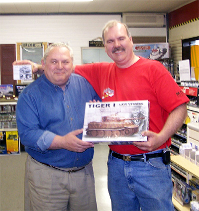

News from Swanny’s Models – 5/8/2006
I have some very nice pieces on the work bench from Track 48 that we’ll be looking at next, work has been going on for more than a month on a huge review of the 1/48 scale B-17 molds – both Revell and Monogram, their variations and all the neat accessory packages.

Note that I said “molds”, this is not just a kit review but something that goes way beyond and if you are a fan of B-17s then you will not want to miss this one. I was able to make a visit to Internet Hobbies in Mayfield Pennsylvania. While there Dale took some time from his busy schedule and showed me around the order processing center and showed me some of the very exciting things he has been doing in conjunction with Accurate Miniatures and with some new 1/72 scale hard plastic military miniatures. Dale also twisted my arm a bit causing me to pick up a 1/35 AFV Late Tiger 1 along with some Lion Roar workable track links. I don’t normally build 1/35 scale armor but the Tiger 1 has always been my favorite tank and when Dale pulled out those track links I knew resistance was futile from that point on (just warm up my credit card). I’ve been talking to the folks at Bare Metal Foil and they will be helping me with some supplies and information to create a feature on making your own molds and casting your own resin accessories. Recently Rusty Rail joined the distinguished list of sponsors at Swanny’s Models and they have been very busy. Soon we will be seeing a very interesting WW2 period wrecking truck in 1/48 coming from those guys that is sure to catch your eye. For several weeks now I have been spending my Sunday afternoons in front of a set of video cameras and some very hot set lights while filming an instructional video aimed at the basics of model building, painting and weathering. That project has at least three more weeks of filming to go before it heads for the editing room and with some luck by Christmas this little item will be available. All of these subjects will be covered in the next few weeks along with a sprinkling of kit reviews.
Work continues with the comparative build between the Classic Airframes SM-79 and the Trumpeter SM-79, the final details have arrived for the He-115 build so that will begin to move forward and the resin Br.20 project continues to move forward during gaps in filming, writing and looking for new modeling materials. I hope that this little teaser has wetted your appetite, stay tuned folks, all these great things will be showing up over the coming weeks.